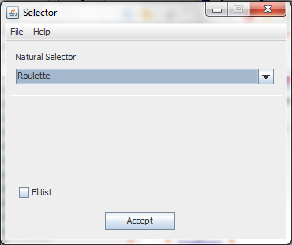

The selector is in charge of choosing which chromosomes will be used for the next generation.
Pressing on the "Selector" button (without the quotes) opens a window like this one:
There are 3 types of selectors defined in JGAL_GUI:
Roulette
Tournament
Ranking
JGAL_GUI allows to use elitism with any of the selection methods permitted.